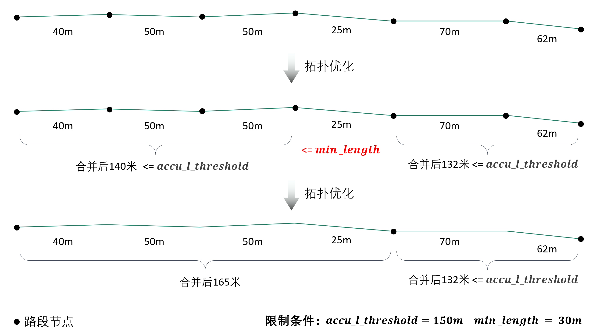
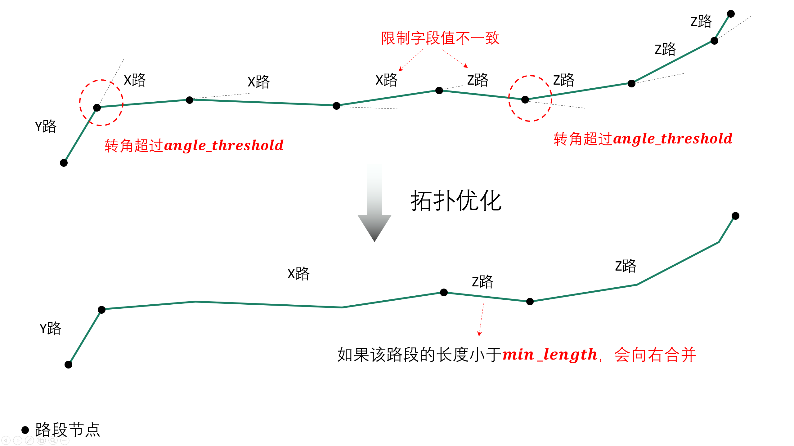
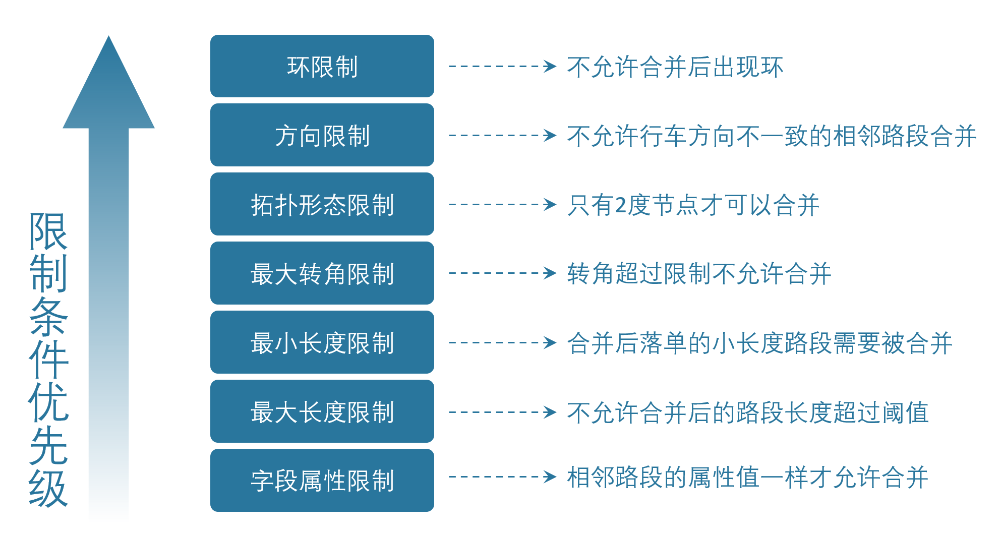

🔎类方法汇总
1. NetReverse类
1.1. NetReverse类初始化
- class NetReverse(flag_name: str = '深圳市', plain_prj: str = 'EPSG:32650', ignore_head_tail: bool = False, cut_slice: bool = False, slice_num: int = 5, generate_rod: bool = False, min_rod_length: float = 5.0, restrict_region_gdf: gpd.GeoDataFrame = None, save_split_link: bool = False, modify_minimum_buffer: float = 0.8, save_streets_before_modify_minimum: bool = False, save_streets_after_modify_minimum: bool = False, save_tpr_link: bool = False, ignore_dir: bool = False, allow_ring: bool = False, restrict_angle: bool = True, restrict_length: bool = True, accu_l_threshold: float = 200.0, angle_threshold: float = 35.0, min_length: float = 50.0, save_preliminary: bool = False, is_process_dup_link: bool = True, process_dup_link_buffer: float = 0.8, dup_link_buffer_ratio: float = 60.0, net_out_fldr: str = None, net_file_type: str = 'shp', is_modify_conn: bool = True, conn_buffer: float = 0.8) None
可以将参数分为5组：参数含义如下：
(1) 第一组（总体信息）
- flag_name
项目名称
- plain_prj
平面投影坐标系
- net_out_fldr
最终路网的存储目录
- net_file_type
路网的输出文件类型，shp 或者 geojson
(2) 第二组（路径解析、拆分参数）
- multi_core_parse
是否启用多核解析(解析二进制路径文件)，默认False
- parse_core_num
多核解析时使用的核数，默认2
- ignore_head_tail
是否忽略路径首尾的无名道路, 这种一般是小区内部道路，默认True
- cut_slice
拆分路段时，是否分片处理，内存不够时可以指定为True，默认False
- slice_num
拆分路段时，拆分为几个slice处理
- generate_rod
是否生成连杆, 只有当参数ignore_head_tail为false时该参数才生效，默认False
- min_rod_length
最小连杆长度，米
- restrict_region_gdf
限制区域gdf，若传入此区域，那么仅仅只对在区域范围内的路网进行逆向
- save_split_link
是否保存拆分路径后的link层文件，默认False
(3) 第三组（拓扑关联参数）
- modify_minimum_buffer
极小间隔节点优化的buffer, m
- save_streets_before_modify_minimum
是否保存优化前的结果，默认False
- save_streets_after_modify_minimum
是否保存优化后的结果，默认False
- save_tpr_link
是否保存优化后且进行方向处理的文件，默认False
(4) 第四组（拓扑优化参数）
- limit_col_name
路段合并时，用于限制路段合并的线层属性字段，默认’road_name’，如果你要使用其他字段来限制合并，请自定义该参数
- ignore_dir
路段合并时，是否忽略行车方向，默认False
- allow_ring
是否允许路段合并后出现环，默认False
- restrict_angle
是否启用最大转角限制来约束路段合并，默认True
- restrict_length
是否启用最大路段长度限制来约束路段合并，默认True
- accu_l_threshold
允许的最长的路段长度，米，默认200米
- angle_threshold
允许的最大的路段内转角，度，默认35度
- min_length
允许的最小的路段长度，米，默认50米
- save_preliminary
是否保留重复路段处理前的文件，默认False
- multi_core_merge
是否启用多进程进行合并，默认False
- merge_core_num
启用几个核，默认1
(5) 第五组（重叠路段处理参数）
- is_process_dup_link
是否处理重复路段，默认True
- process_dup_link_buffer
处理重复路段所使用的buffer长度，米，使用默认值即可
- dup_link_buffer_ratio
重叠率检测阈值，使用默认值即可
(6) 第六组（联通性修复参数）
- is_modify_conn
是否检查潜在的联通性问题并且进行修复，默认True
- conn_buffer
检查联通性问题时使用的检测半径大小,单位米
- conn_period
取值 ‘final’ or ‘start’, ‘final’表示在拓扑优化之后修复联通性, ‘start’表示在拓扑优化之前修复联通性
final: 可能矫正不足
start：更耗时，可能会过度矫正，比如：将立交和地面道路进行了联通
(7) 第七组（分区逆向参数）
- multi_core_reverse
是否启用多进程对路网进行并行逆向计算，默认False，大范围路网请求时可以指定为True
- reverse_core_num
逆向并行计算要启用的核数，默认2
1.2. 初始化中三个并行参数的区别
(1) multi_core_parse
指的是从磁盘读取二进制路径文件并进行解析这一步骤的并行，路径文件数量较多：推荐multi_core_parse=True
(2) multi_core_merge
指的是拓扑优化的并行，这里的并行不会对路网进行分块处理，最终输出的是一个整体的路网
(3) multi_core_reverse
指的是路网生产过程的并行(不包括路径解析这一步)，他会将整体路网分块，分别在不同的块上计算，最终输出的路网个数 = reverse_core_num
大范围区域路网获取：推荐multi_core_reverse指定为True，然后再用合并接口进行路网合并
1.3. NetReverse类方法
(1) generate_net_from_request
请求路径规划计算得到路网
- class NetReverse.generate_net_from_request(key_list: list[str] = None, binary_path_fldr: str = None, od_file_path: str = None, od_df: pd.DataFrame = None, region_gdf: gpd.GeoDataFrame = None, od_type='rnd', boundary_buffer: float = 2000, cache_times: int = 300, ignore_hh: bool = True, remove_his: bool = True, log_fldr: str = None, save_log_file: bool = False, min_lng: float = None, min_lat: float = None, w: float = 2000, h: float = 2000, od_num: int = 100, gap_n: int = 1000, min_od_length: float = 1200.0) None
可以将参数分为5组：参数含义如下：
第一组（输出结果参数）：
- binary_path_fldr
请求得到的路径源文件的存储目录，必须参数
第二组（请求设置参数）：
- key_list
开发者key值列表，必须参数
- cache_times
路径文件缓存数，即每请求cache_times次缓存一次数据到binary_path_fldr下，可选，默认300
- ignore_hh
是否忽略时段限制进行请求，默认False
- remove_his
是否对已经请求的OD重复(指的是在请求被意外中断的情况下，od_id为判断依据)请求，默认True
- save_log_file
是否保存日志文件
- log_fldr
日志文件的存储目录
第三组（OD构造参数）：
- od_file_path
用于请求的od文件路径，可选参数
- od_df
用于请求的od数据，该参数和od_file_path任意指定一个即可，可选参数
- region_gdf
用于构造od的面域数据
- min_lng
矩形区域的左下角经度
- min_lat
矩形区域的左下角纬度
- w
矩形区域的宽度，米
- h
矩形区域的高度，米
- boundary_buffer
区域边界buffer，米，可选
- od_type
用于构造od的方法，rand_od、region_od、diy_od
- od_num
请求的od数，od数越多，请求的路径就越多，路网覆盖率就越完整，默认100，只有od_type为rand_od时起效
- gap_n
网格个数，默认1000，只有od_type为rand_od时起效
- min_od_length
od之间最短直线距离，只有od_type为rand_od时起效
(2) generate_net_from_pickle
从路径源文件计算得到路网
- class NetReverse.generate_net_from_pickle(binary_path_fldr: str = None, pickle_file_name_list: list[str] = None) None
- binary_path_fldr
请求得到的路径源文件的存储目录，必须参数
- pickle_file_name_list
需要使读取的路径源文件列表，如果不指定，则默认读取binary_path_fldr下的所有源文件
(3) create_node_from_link
静态方法：从线层创建点层并且添加拓扑关联
- class NetReverse.create_node_from_link(link_gdf: gpd.GeoDataFrame = None, update_link_field_list: list[str] = None, using_from_to: bool = False, fill_dir: int = 0, plain_prj: str = 'EPSG:32650', ignore_merge_rule: bool = True, modify_minimum_buffer: float = 0.8, execute_modify: bool = True, auxiliary_judge_field: str = None, out_fldr: str = None, save_streets_before_modify_minimum: bool = False, save_streets_after_modify_minimum: bool = True) tuple[gpd.GeoDataFrame, gpd.GeoDataFrame, gpd.GeoDataFrame]
- link_gdf
路网线层gdf数据，必须数据
- update_link_field_list
需要更新的字段列表, 生产拓扑关联后需要更新的线层基本字段，从(link_id, from_node, to_node, dir, length)中选取，
- using_from_to
是否使用输入线层中的from_node字段和to_node字段，默认False
- fill_dir
用于填充dir方向字段的值，如果update_link_field_list中包含dir字段，那么该参数需要传入值，允许的值为1或者0
- plain_prj
所使用的平面投影坐标系
- ignore_merge_rule
是否忽略极小间隔优化的规则，默认True
- auxiliary_judge_field
用于判断是否可以合并的线层字段, 只有当ignore_merge_rule为False才起效
- execute_modify
是否执行极小间隔节点优化，默认True
- modify_minimum_buffer
极小间隔节点优化的buffer, 米
- out_fldr
输出文件的存储目录
- save_streets_before_modify_minimum
是否存储极小间隔优化前的数据，默认True
- save_streets_after_modify_minimum
是否存储极小间隔优化后的数据，默认True
(4) topology_optimization
路段拓扑优化
- class NetReverse.topology_optimization(self, link_gdf: gpd.GeoDataFrame = None, node_gdf: gpd.GeoDataFrame = None, out_fldr: str = None) tuple[gpd.GeoDataFrame, gpd.GeoDataFrame, dict]
单独使用该类方法优化已有路网，请在初始化NetReverse类时指定 拓扑优化参数
- link_gdf
请求得到的路径源文件的存储目录，必须参数
- node_gdf
需要使读取的路径源文件列表，如果不指定，则默认读取binary_path_fldr下的所有源文件
- out_fldr：
存储拓扑优化路网文件的目录
路段拓扑优化的相关参数的图解：
下图标注了每个路段的长度值，限制条件：合并后路段长度不超过150米，路段长度不得小于30米

若指定了limit_col_name为’road_name’，下图标注了每个路段的road_name值，限制条件：节点转角超过20°不得合并

不少场景下，无法完全满足所有的限制条件，各限制条件的服从优先级为：

(5) modify_conn
路网联通性修复
- class NetReverse.modify_conn(self, link_gdf: gpd.GeoDataFrame = None, node_gdf: gpd.GeoDataFrame = None) tuple[gpd.GeoDataFrame, gpd.GeoDataFrame]
单独使用该类方法优化已有路网的联通性，请在初始化NetReverse类时指定 联通性修复参数
- link_gdf
有标准字段的路网线层
- node_gdf
有标准字段的路网点层
(4) redivide_link_node
路段、节点重塑、连通性修复
- link_gdf
至少包含geometry字段的线层数据
生成的新路网在net_out_fldr(NetReverse类初始化参数)下存储